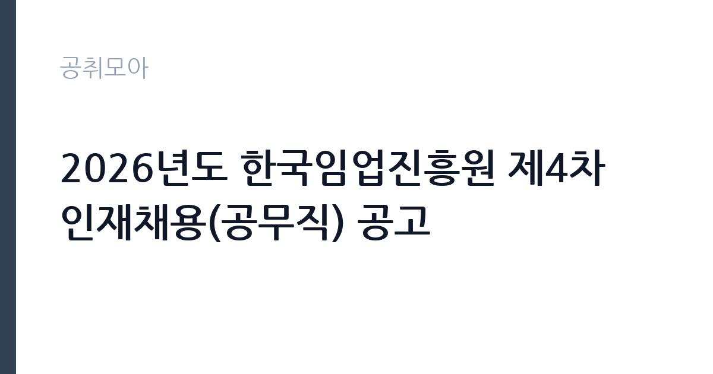

[공공기관] 2026년도 한국임업진흥원 제4차 인재채용(공무직) 공고
한국임업진흥원 · 대전 · 마감 2026-11-02 (D-15) · 출처 잡알리오

한눈에 보는 모집 조건
| 기관 | 한국임업진흥원 |
|---|---|
| 공고명 | 2026년도 한국임업진흥원 제4차 인재채용(공무직) 공고 |
| 고용형태 | 공무직 |
| 근무지 | 대전 |
| 게시일 | 2026-10-19 |
| 마감일 | 2026-11-02 (D-15) |
지원자격, 이렇게 읽으세요
- 공공기관 채용공시
- 세부 조건은 원문 공고문 확인
이번 채용은 신입 대상이고 학력과 경력에 제한을 두지 않습니다. 응시 자격의 핵심은 공무직 채용 결격사유가 없다는 점과 임용 즉시 근무가 가능하다는 점입니다. 2급 일반사무는 행정과 사무 전반을, 2급 임업임산(품질관리)은 임업·임산물의 품질 관리 업무를 담당합니다. 우대사항은 보훈대상자, 공공기관 청년인턴 경험자, 한국임업진흥원 우수 청년인턴, 취약계층, 자립준비청년, 한국사능력시험 성적 보유자입니다. 가점은 가장 유리한 항목 하나만 적용되므로, 여러 항목에 해당하더라도 점수가 가장 높은 것을 선택해야 합니다.
이 공고의 포인트
이 공고의 가장 큰 장점은 진입 장벽이 낮다는 것입니다. 학력과 경력 제한이 없어, 공공기관 취업을 처음 준비하는 지원자도 도전할 수 있습니다. 두 번째는 신분입니다. 공무직은 기간의 정함이 없는 무기계약으로 정년까지 근무할 수 있어, 계약직 공고와는 안정성의 결이 다릅니다. 세 번째는 7명이라는 인원입니다. 한두 명을 뽑는 공고보다 선발 폭이 넓습니다. 한국임업진흥원은 산림청 산하 기관으로 임업 통계와 산림 경영 지원, 임산물 품질 인증 업무를 수행합니다.
전형은 어떻게 진행되나
전형은 서류전형과 필기시험, 면접전형으로 이어지는 구조가 일반적이며, 직무에 따라 NCS 기반 평가가 포함될 수 있습니다. 서류에서는 자격 요건과 우대사항 증빙을 확인하고, 필기에서는 직업기초능력과 직무 지식을 평가합니다. 접수는 한국임업진흥원 채용 홈페이지에서 온라인으로 진행되고, 마감은 2026년 11월 2일입니다. 우대사항은 증빙서류로 입증해야 하며, 미제출 시 가점이 인정되지 않습니다. 한국사능력시험 성적을 활용하려면 유효 기간과 급수를 확인하세요.
원문에서 확인한 전형 방식
(공무직) 2급, 일반사무 : 제한 없음 (공무직) 2급, 임업임산(품질관리) : 제한 없음
이런 분께 추천해요
- 공공기관 취업을 처음 준비하며 학력 제한 없는 자리를 찾는 지원자
- 산림·임업 분야에 관심이 있는 전공자와 비전공자
- 청년인턴 경험이나 취약계층 요건으로 가점을 받을 수 있는 분
지원 전 체크리스트
- 우대사항 증빙서류를 준비했는가
- 가점은 한 항목만 적용된다는 점을 확인했는가
- 필기전형 대비 계획을 세웠는가
- 임용 즉시 근무가 가능한가
모집 일정과 제출 타이밍
접수 마감은 2026년 11월 2일입니다. 서류전형 결과와 필기·면접 일정은 채용 홈페이지에 공지되며, 최종합격 후 임용일은 기관 일정에 따라 정해집니다. 공무직 채용은 필기전형이 포함되는 경우가 많아 준비 기간을 넉넉히 잡아야 합니다. 마감일이 월요일이므로 주말에 지원서를 완성하는 계획이 현실적입니다. 일정은 기관 사정에 따라 변경될 수 있어 공고 페이지를 확인하세요.
직무 이해하기: 공공기관
일반사무 직무는 인사와 총무, 예산과 회계, 문서 관리 같은 기관 운영의 기본 업무를 맡습니다. 임업임산(품질관리) 직무는 임산물의 품질 기준과 검사 업무를 지원하고, 품질 인증 관련 자료를 관리합니다. 한국임업진흥원은 임업 경영체 지원과 산림 통계, 임산물 유통 지원 사업을 수행하므로, 두 직무 모두 사업 운영을 뒷받침하는 실무가 중심입니다. 현장 조사가 포함되는 경우도 있어 이동과 기록 업무를 함께 감당할 수 있어야 합니다.
자기소개서 작성 팁
자기소개서는 학력과 경력이 화려하지 않아도 지원 동기와 직무 이해를 분명히 쓰면 평가를 받을 수 있습니다. 한국임업진흥원이 하는 일을 한 문단으로 정리하고, 그중 본인이 기여할 수 있는 부분을 구체적으로 적으세요. 임업임산 직무를 지원한다면 임산물 품질 관리가 왜 중요한지에 대한 이해를 보여주는 것이 좋습니다. 우대사항에 해당한다면 관련 경험을 사실대로 서술하되, 증빙 가능한 범위 안에서만 쓰세요. 성실성과 장기 근무 의지를 드러내는 마무리가 효과적입니다.
면접 준비 포인트
면접에서는 기관의 사업에 대한 이해와 공직 가치관을 확인합니다. 한국임업진흥원의 주요 사업을 설명할 수 있어야 하고, 공무직으로서의 복무 자세도 평가 대상입니다. 일반사무 지원자는 문서 작성과 예산 처리 절차를, 품질관리 지원자는 검사 기준과 기록 관리 방식을 질문받을 수 있습니다. 갈등 상황에서의 대응이나 상사의 지시가 규정과 다를 때의 판단도 준비하세요. 답변은 결론부터 말하고 근거를 붙이는 방식이 좋습니다.
급여·근무조건 읽는 법
공무직의 보수는 한국임업진흥원의 공무직 보수 기준에 따라 지급되며, 기본급과 각종 수당, 상여로 구성됩니다. 이 공고에는 금액이 요약되어 있지 않으므로 정확한 초임은 원문 공고문의 보수 항목이나 기관 채용 담당 부서에 확인해야 합니다. 공무직은 기간의 정함이 없는 계약으로 정년이 정해져 있고, 4대보험과 퇴직급여, 복리후생이 기관 규정에 따라 적용됩니다. 공공기관 경영정보 공시인 알리오에서 기관의 평균 보수와 복리후생 항목을 함께 확인할 수 있습니다.
자주 묻는 질문
- 정말 학력 제한이 없나요
이번 공고는 신입 대상이며 학력과 경력에 제한을 두지 않는다고 안내되어 있습니다. 세부 기준은 원문 공고문을 확인하세요. - 우대 가점을 여러 개 받을 수 있나요
가장 유리한 항목 하나만 적용됩니다. 여러 항목에 해당하더라도 점수가 높은 하나를 선택해 증빙해야 합니다. - 근무지는 어디인가요
대전입니다. 구체적 근무 부서와 배치는 임용 후 정해지며, 공고문에 근무지 안내가 포함되어 있습니다.
함께 보면 좋은 공고
[공공기관] '2026 장애인선수 현장밀착형 스포츠과학지원사업' 분석연구원(가급) 채용 공고 — 마감 2026-11-02[공공기관] 한국토지주택공사 서울지역본부 기간제근로자(매입행정역, 매입기술역, 공사원가검토역, 매입변호사, 매입감정평가사) 채용공고 — 마감 2026-11-02[공공기관] (보훈 및 장애인 제한경쟁) 육아휴직자 대체 시간선택제 일자리 채용 — 마감 2026-11-02출처: 잡알리오 공개정보를 바탕으로 공취모아가 정리한 안내글입니다. 모집 조건·일정은 변경될 수 있으니 지원 전 반드시 원문 공고문을 확인하세요. 본 글은 정보 제공용이며 합격을 보장하지 않습니다.